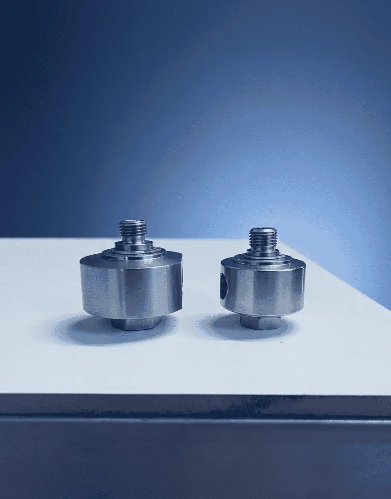
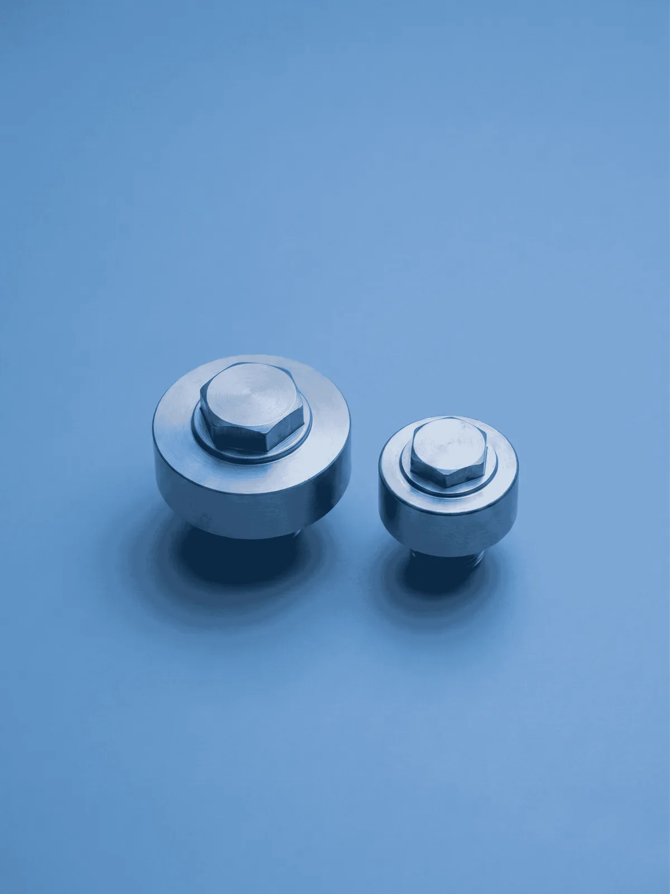

1/4 Yıkama Pervanesi Döner Rekor
Self Servis Boom Pervane Sistemleri için Profesyonel Döner Rekor
Self servis oto yıkama sistemlerinin verimliliğini artırmak için tasarlanan 1/4 Yıkama Pervanesi Döner Rekoru, piyasa standartlarına tam uyumlu yapısıyla yüksek performans sağlar. Boom pervanesi ve boom pergel sistemlerinde kritik bir yedek parça olan bu döner rekor; 2 keçeli ve 4 keçeli sistem seçenekleriyle sızdırmazlık kalitesini maksimize eder. Basınç kaybını minimize ederek boom pervane ömrünü uzatır.
Öne Çıkan Özellikler:
- Boom Uyumlu: Tüm boom çiftli ve boom tekli pervane sistemleriyle tam uyumluluk.
- Diş Ölçüsü: Evrensel uyumlu standart 1/4" bağlantı yapısı.
- Sızdırmazlık: İhtiyaca göre seçilebilen 2 ve 4 keçeli özel sistem.
- Dayanıklılık: Yüksek basınçlı su döngüsüne ve aşınmaya tam direnç.
- Verimlilik: Su sızıntılarını önleyerek istasyon verimliliğini artırır.
1/4 Döner Rekor Sık Sorulan Sorular
Self servis oto yıkama yedek parça seçiminde en sık gelen sorular.
1/4 döner rekor hangi self servis pervane sistemleriyle uyumludur?
Uygun diş ve hat standardı bulunduğunda boom tekli, boom çiftli ve benzer self servis oto yıkama pervane sistemlerinde kullanılabilir.
2 keçeli ve 4 keçeli döner rekor arasında ne fark vardır?
4 keçeli yapı yoğun kullanım ve yüksek basınç altında daha yüksek sızdırmazlık sağlar. 2 keçeli seçenek ise daha standart kullanım senaryolarında tercih edilebilir.
Döner rekor ne zaman değiştirilmelidir?
Su kaçağı, basınç düşüşü, sert dönüş veya sıkışma görüldüğünde parça kontrol edilmeli; revizyon yeterli değilse değişim planlanmalıdır.
Doğru Ürünü Seçmene yardımcı olabiliriz
Model seçimi ve fiyat karşılaştırmasını tek merkezden görmek için aşağıdaki sayfalara geçin.